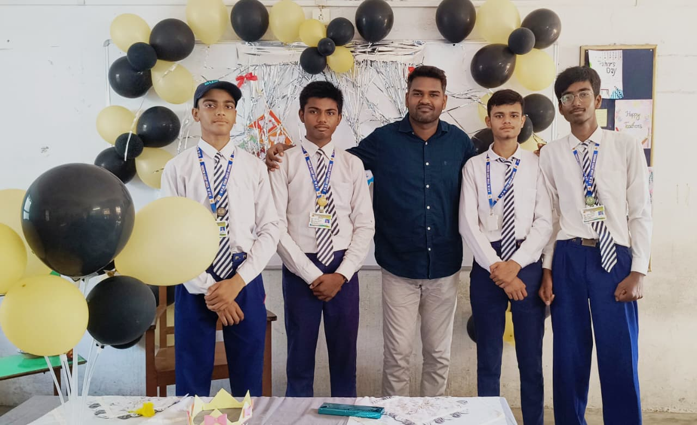

0
Days since this chapter of life began.
This isn't really a page about school. It is about the people who make a classroom mean something long after the final bell.
It was during the uncertain days of the pandemic. On that very first day, I walked into the classroom, slinging my bag off my back, completely unaware of the role you were about to play in my life. You stepped into the room to take attendance for the first time, and looking right at me, you gave me a simple task: go check the headcount in Section B.
I peeked in and saw the reality—Section B had 30 students, while our Section A had 31. However, my entire group of friends was sitting right there in Section A. Faced with the terrifying prospect of being transferred away from them, I panicked and told a tiny white lie. I walked back, looked at you, and confidently said that Section B already had 32 students.
Then you wrote my name down in the Section A register—the class where you had just been appointed as the class teacher. However I was completely unaware you you are?
And... yah! that's our first meetup.
By letting me stay, that small, desperate fib became the exact moment our story began. The bond didn't form overnight, but as the months passed by, those quiet, everyday moments slowly built into unforgettable memories.
"A great teacher doesn't simply enter a classroom. They leave something behind."
A thought worth rememberingLooking back, that small lie to stay in Section A was probably the best decision I have ever made. Days turned into months, and months eventually turned into years. Usually, as students grow older, the distance between them and their teachers widens, but for our batch, the bond we shared with you only strengthened over time. You proved your incredible dedication when you chose not to leave the school, staying by our side as our class teacher for three vital years just to see us through.
At every step and in every moment, you were quietly building our character, and you did so by leading by example. Nothing left a deeper impression on us than your own impeccable, unblemished character. In a world where people easily compromise their values, you stood as a rare example of someone with an unimaginably strong moral compass.
During the five years with you, you taught us far more than what was ever printed in our textbooks. A syllabus dictates what we need to memorize for an exam, but you showed us why true understanding actually matters in the real world.
Because of your guidance, my entire perspective on society shifted. You taught me to look at everyone with genuine respect—even those society often overlooks. You helped us realize that, much like the background dancers in an orchestra, every single person plays a vital role and deserves absolute dignity.
Beyond academics, you taught us the true meaning of patience and integrity. You showed us by example that discipline doesn't have to be loud to be effective, and that true strength lies in staying calm and compassionate when we make mistakes.
In a highly competitive environment where marks often define a student, you constantly reminded us that our character is our most important report card. You gave us the courage to embrace failure, take responsibility, and face complex challenges with curiosity instead of fear.
School years have a strange habit of moving faster than expected. One moment we are sitting in your familiar classroom, and suddenly, the board exams are over, and the next chapter arrives with full force.
The leap into Class 11 feels entirely different. The shift to the heavy sciences and mathematics, along with the intense preparation for advanced engineering exams, doesn't just change the syllabus—it changes how I have to think. The numericals are heavier, the core concepts run much deeper, and the road ahead feels considerably steeper.
Yet, as I dive into complex problem-solving—whether I am breaking down high-level physics equations, mapping out the backend database for a new web application, or debugging lines of code—I realize I am still relying on the tools you gave me. The patience to troubleshoot, the logic to build things step-by-step, and the refusal to quit when a concept refuses to click all trace back to your classroom.
My goals to build, develop, and engineer solutions in the real world require a strong analytical foundation. But more importantly, they require the resilience and character you modeled for us every single day. The subjects are harder now, but having a teacher like you lay the foundational bricks of my mindset makes all the difference.
"Moving forward doesn't mean leaving every lesson behind."
Chapter IVAs time moves forward, the sharp details of the syllabus will inevitably blur. I may one day forget the exact phrasing of an explanation you wrote on the board. But what I will never forget is the atmosphere of your classroom—how you made us feel safe to make mistakes, challenged us to think bigger, and saw us as individuals with real potential.
The academic pressures of Class 11 demand more, and the years will continue to fly by, but the respect I hold for you remains completely untouched by time. Thank you for not just teaching me how to study, but for showing me how to be.
Happy Teacher's Day to my greatest inspiration. Your seat is forever reserved in the deepest chamber of my heart.
You are not one of the teachers that I miss, you are the only teacher that I miss.

~ from my heart ❤️
to my special inspiration
— Pushkar